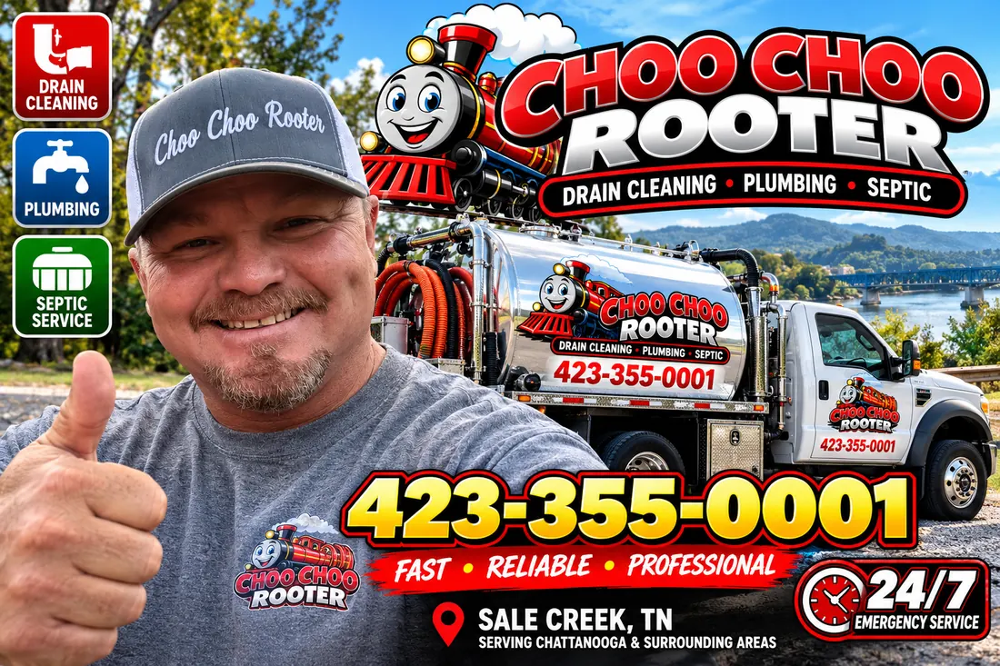
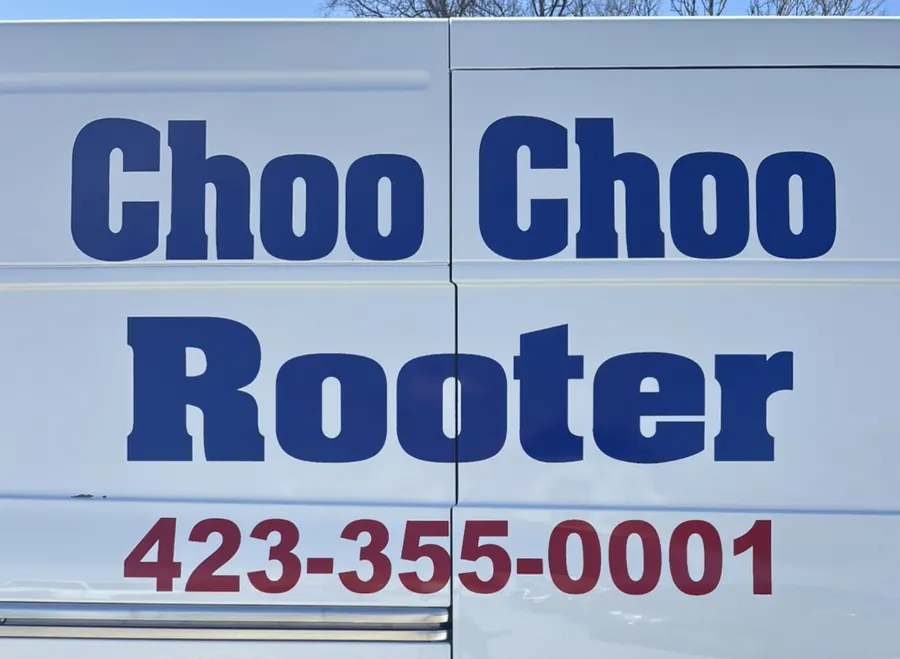

Phil and the Choo Choo Rooter crew
A Sale Creek plumbing, drain and septic outfit that answers the phone at night. Customers mention the owner by name more than anything else.
“When you think plumbing, we do it!”
That line is from their old website, and it still fits. Their own words: affordable plumbing and emergency service, budget friendly maintenance, and getting your home or business back to normal with the least amount of disturbance possible.
What their customers keep coming back to is the phone. People call at 10:30 on a Saturday night and Phil picks up. More than one has had him look at the problem over FaceTime before anybody drove out.
“Boss man was great when I called him yesterday 3/16/22 … He FaceTimed me to see what’s going on and to get an idea what’s happening. I don’t know any company that’ll FaceTime you.”


A crew, not one guy with a snake
Their own photo shows the vans, a box truck and two mini excavators. Bigger jobs get a crew and a machine; small ones get somebody who can tell you what’s wrong before he’s under the sink.
“They’re a great family owned small business, they stand by their work and they trust the people they serve to do their part and pay for services rendered.”
Find them
Shop
430 Retro Hughes Rd.Sale Creek, Tennessee 37373
Phone
Hours
Open 24/7. 24/6 with live response on Sundays.